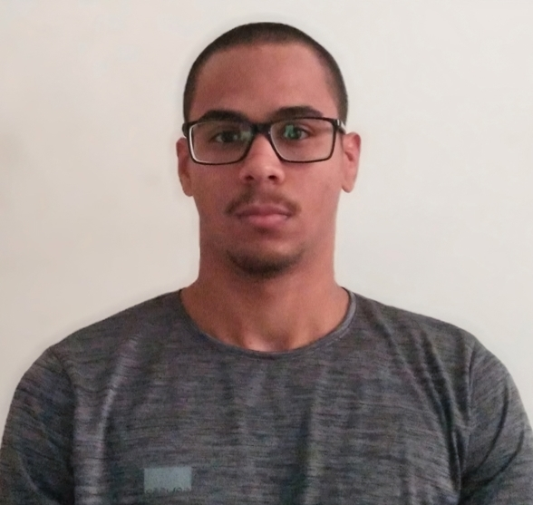

Formação Acadêmica
- Gastronomia
- Diploma: Superior de Tecnologia em Gastronomia.
- Instituição: UNIT - Universidade Tiradentes.
- Conclusão: 2020.
- Análise e Desenvolvimento de Sistemas
- Diploma: Superior de Tecnologia em Análise e Desenvolvimento de Sistemas.
- Instituição: UNINASSAU.
- Conclusão: 2025.
Cursos Complementares
- Educação Empreendedora
- Tipo: Simpósio.
- Duração: 40 horas.
- Instituição: UNIT - Universidade Tiradentes.
- Ano: 2019.
- Business na Gastronomia
- Tipo: Evento 10ª Semana de Gastronomia.
- Duração: 20 horas.
- Instituição: UNIT - Universidade Tiradentes.
- Ano: 2019.
- Gastronomia no Mundo da Quarentena
- Tipo: Evento 12ª Semana de Gastronomia.
- Duração: 40 horas.
- Instituição: UNIT - Universidade Tiradentes.
- Ano: 2020.
Informações Adicionais
- • Inglês Intermediário;
- • Informática Básica;
- • Microsoft Office Básico;
- • HTML e CSS Básico;
Dados Pessoais
• Email: filipemenezesb@outlook.com.br
• Idade: 23 Anos
• Nacionalidade: Brasileiro
• Número: (79) 99114-6189
• Cidade e Estado: Aracaju, Sergipe